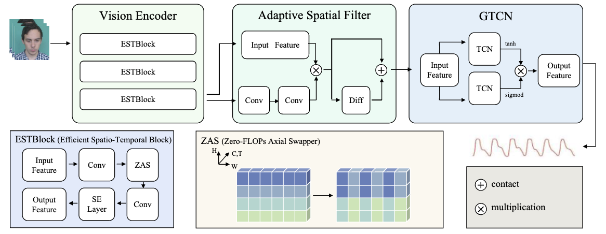
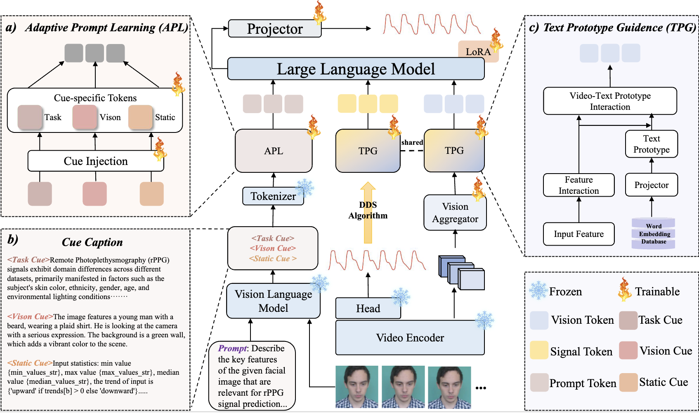
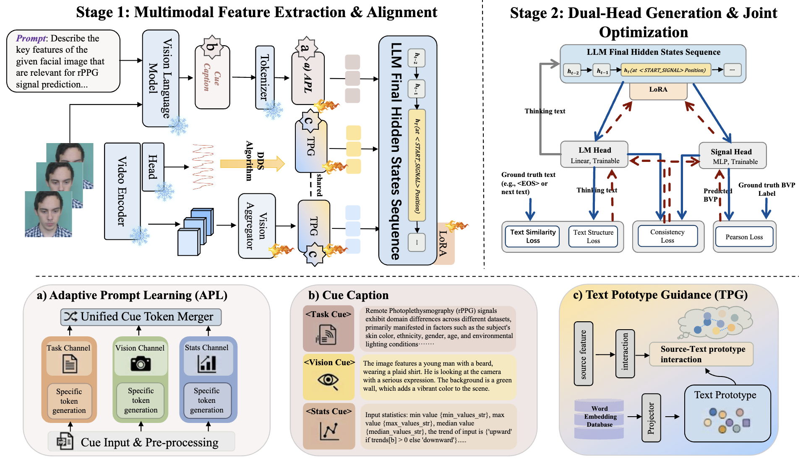
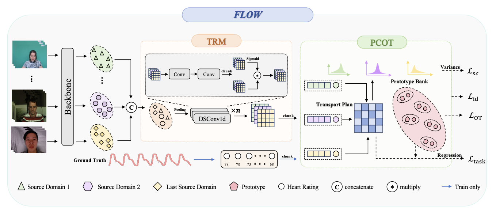
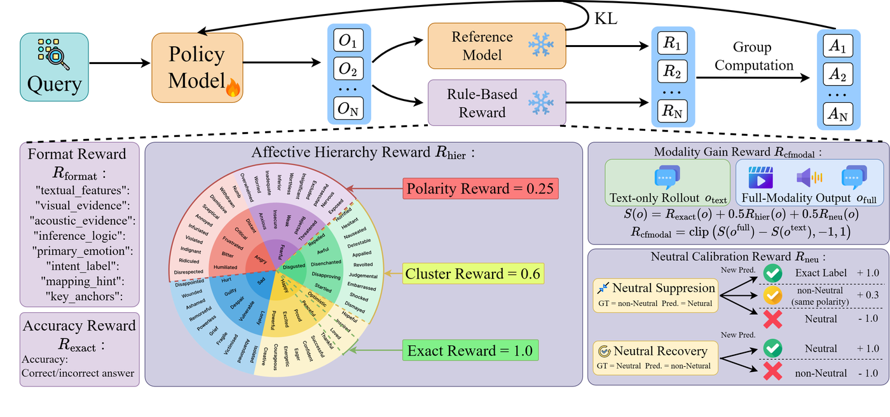
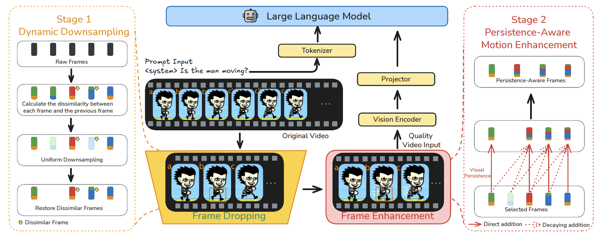
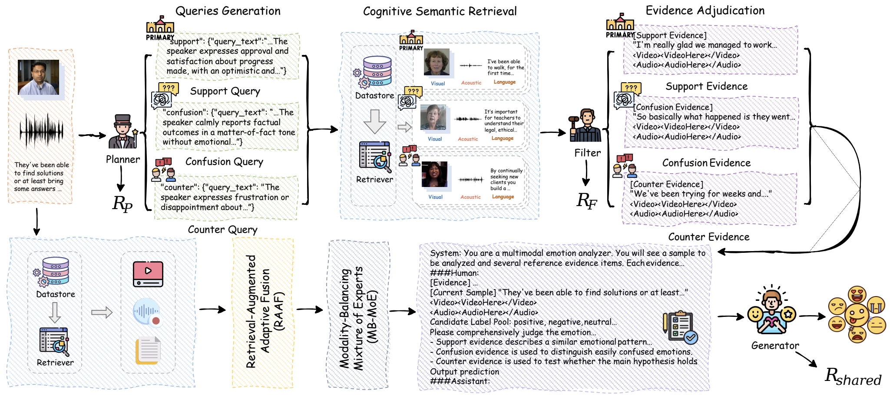

PHASE-Net: Physics-Grounded Harmonic Attention System for Efficient Remote Photoplethysmography Measurement
Physics-grounded harmonic attention for efficient remote photoplethysmography measurement.
I am a first-year Master's student in Artificial Intelligence and Robotics at The Chinese University of Hong Kong, Shenzhen. Since December 2024, I have also been a visiting student at Great Bay University, hosted by Prof. Zitong Yu.
Research interests

01 — News
Recent milestones
Two co-authored papers accepted by ACM MM 2026
Tencent Hunyuan-supported AI celebrity teammate “Xiao Tian” was launched in Peace Elite; I contributed to the GameMate1.0 memory and game-agent work during my internship.
Two co-authored papers accepted by ICML 2026
One CVPR 2026 Highlight paper.
Two papers accepted by CVPR 2026
One paper accepted by ICLR 2026
02 — Research
8 selected papers
More publications are available on my Google Scholar.
Equal contribution. Corresponding author. Leading papers are highlighted.

Physics-grounded harmonic attention for efficient remote photoplethysmography measurement.

Large-language-model-based cross-modal reasoning for remote physiological sensing.

Explicit reasoning for robust remote physiological signal sensing.

Feature-level optimal warping for generalized remote physiological measurement.

Emotional world models for multimodal affective computing.

Adaptive cognitive-depth control for more efficient LLM agent reasoning.

Persistence-aware compression and aggregation for fast video large language models.

Collaborative multi-agent reasoning for retrieval-augmented multimodal emotion recognition.
03 — Academic
2021 – 2027
Sep 2025 – Jun 2027 (expected)
Sep 2021 – Jun 2025
04 — Experience
2024 – present
Dec 2024 – Present

Oct 2025 – Mar 2026
05 — Recognition
Selected honors